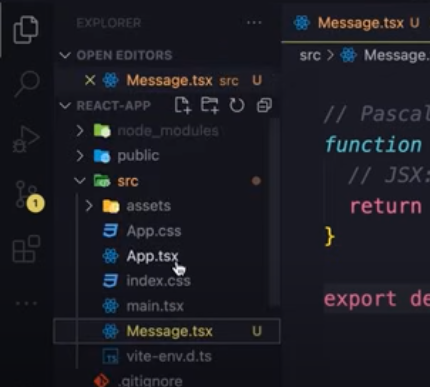

Creating a React Component
The Componant
Right click the scr folder and create a new file called 'Message.tsx'
The extension of a typescript file can be either .ts or .tsx
Often, .ts is used for plain typescript files, and .tsx is used for React components.
2 Ways to Create a Component
We can use a JS class to make them, or a function.
These days functions are most popular, because they're more consise, and easier to write.
If you need to maintain an older codebase that uses classes, you will have to take a different course to learn about that.
The function
Let's declare a function called 'Message'
It's important to note that we are using pascal casing, where the first letter of each word is capitalized.
This is the convention that React ALWAYS follows.
function Message() {
}
Describing the Component
Inside this function is where we describe what the component looks like.
Its comparable to creating our own custom html element.
Let's say we want an h1 saying something...
function Message() {
return
<h1>Something is what i said hoe
<h1>;
}
JSX syntax
The code above utilizes JSX(JavascriptXML)
Under the hood this code gets compiled down to javascript.
This site shows you exactly how this happens.
Using our new component
Export the function like this...
function Message() {
return
<h1>Something is what i said hoe
<h1>;
}
export default Message;
Then head to the App component...
And clear everything in the file...
Writing 'App.tsx' code
First, create the app component...
function App () {
return <div></div>;
}
Then import the Message component...
import Message from './Message'
function App () {
return <div></div>;
}
After that, we can use the component just like an html element.
You can also use self closing tags.
import Message from './Message'
function App () {
return <div> <Message></Message> </div>;
}
Finally, export the 'App' so we can use it elsewhere.
import Message from './Message'
function App () {
return <div> <Message></Message> </div>;
}
export default App;